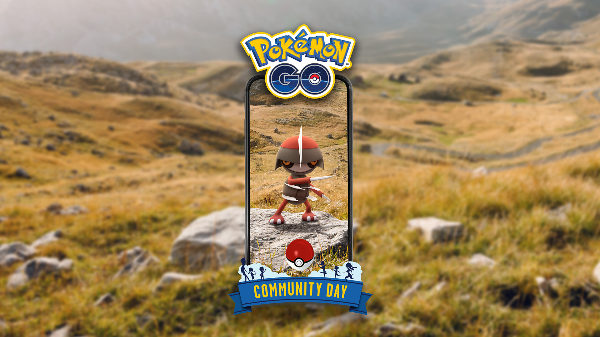
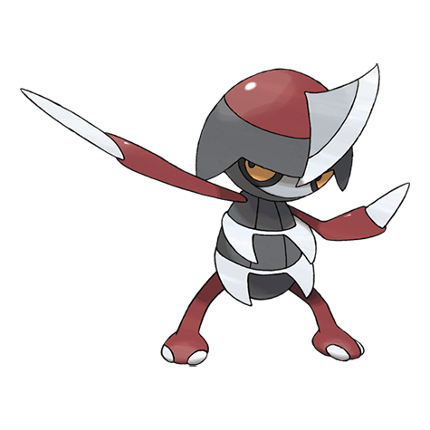
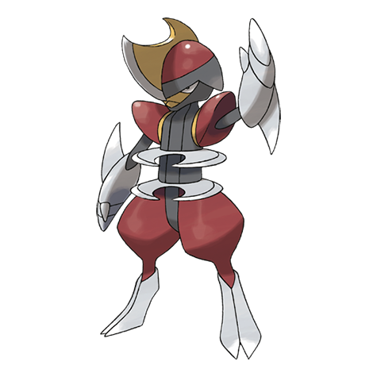
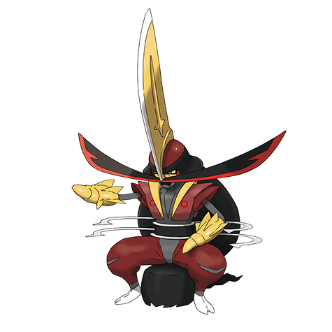

포켓몬 GO 자망칼 커뮤니티 데이 11월 21일 14시~17시, 절각참 대도각참 진화 도각참 배우는 조건
자망칼 사탕을 모아두셨거나 절각참을 진화 버튼 앞에 세워두신 분들은 11월 21일이 슬슬 신경 쓰이실 텐데요. 이번 커뮤니티 데이 주인공이 자망칼이고, 절각참을 대도각참으로 진화시키면 스페셜 어택 도각참을 배우거든요. 다만 기간 한정 진화 요건이 따로 붙어서, 시간과 조건부터 세 줄로 먼저 정리해 볼게요~
- 일정: 11월 21일(토) 14시~17시(한국시간), 도각참 진화는 21시까지
- 조건: 대도각참으로 진화시키기 전에 악타입 또는 강철타입 레이드 보스 1마리 쓰러뜨리기
- 보상: 스페셜 어택 도각참을 배운 대도각참

자망칼이 주인공인 11월 커뮤니티 데이 공식 이미지예요.
이미지 출처: 포켓몬GO 공식 뉴스 — 자망칼 커뮤니티 데이 · ©Scopely Explore ©Pokémon/Nintendo/Creatures/GAME FREAK
포켓몬 GO 자망칼 커뮤니티 데이 시간, 14시부터 17시지만 진화는 21시까지예요
포켓몬 GO 자망칼 커뮤니티 데이는 한국시간 2026년 11월 21일(토) 14시부터 17시까지 3시간 열려요. 17시에 끝나도 진화 기회는 바로 닫히지 않아서, 시간대를 표로 나눠 보면 한눈에 들어와요.
| 시각(한국시간) | 무슨 일이 있나요 |
|---|---|
| 14시 | 커뮤니티 데이 시작, 자망칼이 주인공 |
| 17시 | 커뮤니티 데이 종료 |
| 21시 | 도각참 진화 마감, 평소 진화 조건으로 복귀, 루어모듈·특별한 교환 추가·별의모래 할인도 이 시각까지 |
공식 한국어 공지도 한국시간 14시~17시로 적혀 있어요. 날붙이포켓몬 자망칼이 대량발생한다고 나와 있고, 야생에서 평소보다 더 자주 나타난대요. 루어모듈을 쓰면 자망칼이 끌려올 수도 있고요. 다만 구체적인 출현 확률 수치까지는 공지에 없네요.
도각참이 뭔가요, 트레이너 배틀 위력 75 체육관·레이드 위력 85
도각참은 대도각참이 배우는 스페셜 어택으로, 트레이너 배틀에서는 위력 75, 체육관과 레이드에서는 위력 85예요. 이 기술은 이벤트 중부터 종료 4시간 뒤인 21시까지 절각참을 대도각참으로 진화시켰을 때만 배워요. 그 뒤에 진화하는 건 이번 기회에 해당하지 않으니, 이 시각 컷이 제일 중요하죠. 영문판에서는 '도각참'이 Kowtow Cleave, 자망칼·절각참·대도각참이 Pawniard·Bisharp·Kingambit로 나와요. 해외 정보를 찾아보실 때 이 이름으로 검색하면 편합니다.
| 1단계 | 2단계 | 3단계 |
|---|---|---|
 자망칼 |
 절각참 |
 대도각참 |
자망칼 → 절각참 → 대도각참, 도각참은 마지막 단계인 대도각참이 배워요.
이미지 출처: PokeAPI sprites(공식 아트워크) · ©Pokémon/Nintendo/Creatures/GAME FREAK
절각참 대도각참 진화 조건, 악·강철 레이드 보스 1마리를 쓰러뜨려야 해요
공지 기준으로 이번 기간 한정 진화 요건은 악타입 또는 강철타입 레이드 보스 1마리를 쓰러뜨리는 거예요. 평소 조건이 어떻게 다른지는 이번 공지에 나와 있지 않아서 여기서는 따로 적지 않을게요. 또 공지는 '1마리 쓰러뜨리기'까지만 안내해서, 파티로 함께 쓰러뜨린 경우 등 세부 인정 범위는 인게임에서 직접 보시는 게 가장 정확해요.
레이드 탭에서 악타입이나 강철타입 보스부터 찾아 두면 헤매지 않아요.
절각참을 대도각참으로 진화시키는 순서, 자망칼 포획부터 도각참까지
순서는 자망칼 포획, 절각참 진화, 악·강철 레이드 보스 격파, 대도각참 진화 네 단계예요.
- 14시부터 자망칼을 잡아 사탕 모으기 — 이벤트 시간에는 포켓몬을 잡을 때 사탕이 2배로 쌓여서 제일 효율적이에요
- 사탕이 모이면 절각참으로 진화
- '악·강철 보스' 1마리 쓰러뜨리기
- 대도각참으로 진화시켜 도각참 배우기
진화는 17시 이후에도 열려 있으니, 커뮤니티 데이 3시간은 포획에 쓰고 레이드는 뒤로 미뤄도 괜찮아요. 다만 막판에 몰아서 돌면 마감에 걸릴 수 있으니 20시 전에는 끝내 두는 쪽이 안전하죠~
상황에 따라 이렇게 나눠 보세요
· 낮에 시간이 빠듯하다면: 일단 자망칼 포획부터 챙겨요. 이벤트 시간에는 포켓몬을 잡을 때 사탕 2배 보너스가 붙으니까요.
· 저녁에 레이드를 몰아서 돌릴 거라면: 절각참을 미리 만들어 두세요. 보스 1마리만 쓰러뜨리면 바로 대도각참으로 진화시킬 수 있어서요.
진화가 끝나면 상세 화면에서 도각참이 들어갔는지 바로 볼 수 있어요.
자망칼 커뮤니티 데이 보너스, 사탕과 교환 쪽이 핵심이에요
자망칼 커뮤니티 데이 보너스는 사탕 수급과 교환 쪽에 몰려 있어서, 진화 준비에 바로 보탬이 돼요. 공지에 나온 것 중 챙길 만한 걸 추리면 이래요.
- 이벤트 시간에 포켓몬을 잡을 때 얻는 사탕 2배
- 알 부화 거리 1/4
- 레벨 31 이상 포획 시 사탕XL이 나올 확률 2배
- 루어모듈 효과 1시간, 향로 3시간(산책향로 제외)
- 특별한 교환 1회 추가(하루 최대 2회)
- 교환할 때 필요한 별의모래 50% 할인
색이 다른(이로치) 자망칼이나 스페셜 배경 자망칼을 만날 수도 있다고 공지에 적혀 있는데요, 확률 수치는 공지에 없어요. 커뮤니티 데이에 GO스냅샷을 찍으면 포켓몬이 깜짝 등장한다는 문구도 있어요 ㅎㅎ
스페셜 리서치 티켓과 하이퍼 티켓 박스, 둘 다 US$1.99예요
스페셜 리서치 티켓과 하이퍼 티켓 박스는 둘 다 US$1.99(또는 같은 가치의 현지 통화)인데, 담긴 보상이 달라요.
| 구분 | 구성 | 판매 |
|---|---|---|
| 스페셜 리서치 티켓 | 스페셜 배경 자망칼 만남 3회, 자망칼 추가 만남, 프리미엄 배틀패스 1개, 이상한사탕XL 1개 외 더 많은 혜택 | 판매 시기 추후 안내 |
| 자망칼 커뮤니티 데이 하이퍼 티켓 박스 | 이벤트 티켓, 하이퍼볼 5개 | 웹스토어에 곧 판매 예정 |
도각참 진화 요건은 티켓 없이도 적용돼요. 티켓은 자망칼을 더 만나고 싶을 때 곁들이는 쪽이라고 보시면 됩니다.
자주 묻는 질문
Q. 파트너로 데리고 다니는 절각참이 아니어도 진화 요건이 적용되나요?
공지 기준으로는 파트너 여부와 상관없이 모든 절각참에 적용돼요. 그래서 오래 키운 절각참이든 새로 진화시킨 절각참이든 같은 조건으로 대도각참이 됩니다.
Q. 스페셜 리서치 티켓은 환불이나 선물이 되나요?
환불은 안 되고, 그레이트 프렌드 이상인 친구에게는 선물할 수 있어요. 살 계획이라면 누구 몫인지 미리 정해 두는 게 마음 편하겠죠~
자망칼 커뮤니티 데이 정리
도각참은 체육관·레이드에서 위력이 더 높게 잡혀 있으니 레이드를 자주 도는 분께 특히 반가운 기술이겠어요. 낮에는 자망칼 포획으로 사탕을 모으고, 진화 준비는 마감 전에 마쳐 두시면 마음이 편해요. 그래서 11월 21일은 하루 일정을 넉넉히 비워 두시길 추천드려요. 다들 즐겁게 대도각참 만들어 보세요!
참고한 곳
· 포켓몬GO 공식 뉴스 — 자망칼 커뮤니티 데이(2026.10.22 기준)
✔ 포켓몬 GO 같이 보기 좋은 내용
· 포켓몬고 메테노 샤워 시간 매일 17시부터 21시, 10월 24일까지 야생 메테노와 별의모래 챙기기
· 포켓몬 GO 메가깜까미 슈퍼 맥스 레벨, 11월 1일 오전 10시부터 올릴 수 있어요
· 포켓몬GO FC서울 이벤트 정리 10월 24일 토요일 9시~20시, 야생 6종 파이리 레이드 시간제한 리서치 보상